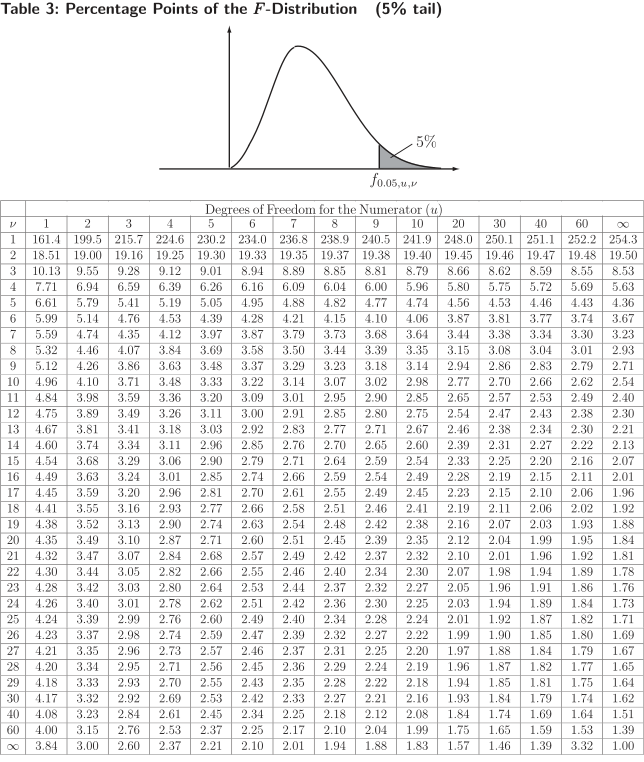

Long description: figure7

Alt text: A table titled "Table 3: Percentage Points of the F-Distribution (5% tail)" shows the relationship between degrees of freedom for the numerator, degrees of freedom for the denominator, and the corresponding percentage point values for the F-distribution at the 5 percent tail.
This description was generated by AI and has not been verified by a human. If you spot an error, please use the feedback link below.
- The table presents data for the F-distribution, specifically for the 5 percent tail.
- The columns represent the degrees of freedom for the numerator, ranging from 1 to 60, with an additional column for degrees of freedom for the denominator, ranging from 1 to \(\infty\).
- The rows are indexed by the degrees of freedom for the denominator, ranging from 1 to 40, with the last row showing data for a denominator degree of freedom of 3.84.
- The values within the table represent the critical F-values corresponding to the 5 percent tail probability for the given degrees of freedom.
- For example, when the numerator degrees of freedom is 1, the value corresponding to the denominator degrees of freedom of 1 is 5.84.
- When the numerator degrees of freedom is 3 and the denominator degrees of freedom is 5, the value is 3.29.
- The table continues to show precise numerical values that can be used to determine critical values for hypothesis testing involving the F-statistic.